Why Should We Care About
the Philosophy of Money?
Money isn't just a technical subject—it's a human one.
Money Touches Everything
- In 2008, the world's "smartest" financial minds nearly collapsed the global economy. How did they get it so wrong?
- Student and medical debt now shapes major life decisions for millions—when to marry, whether to have children, when to retire.
- Bitcoin promised to reinvent money itself. A decade later, the verdict is still out.
- Your credit score—a number you may never have seen calculated—determines what housing, insurance, and even jobs you can access.
Then vs. Now: Financial Life
circa 1970
- Company pension (defined benefit)
- Local bank & savings account
- Cash and checks for daily life
- Mortgage from a bank that held it
- No credit score system
Today
- 401(k)—you manage your own retirement
- Global banks, fintech apps, algorithms
- Credit cards, Venmo, Apple Pay
- Mortgage sold, bundled, and traded globally
- Credit score shapes your entire life
This shift is called financialization—the growing role of financial markets, motives, and institutions in everyday life.
A History of Financial Crises
Financial disasters aren't new. They follow a recurring human pattern.
Tulip Mania
Bubble
Crash
Financial Crisis
Financial Crisis
Collapse
The central question: Do we understand money well enough to prevent these?
The Central Question
We all use money every single day. But do we actually understand what it is, where it came from, and whether the system is fair?
Today's presentation explores this through a series of debates:
Roadmap
What Is Money?
Is It a "Thing" or a Social Agreement?
The commodity theory vs. the credit theory
The Textbook Story
How most economics textbooks explain the origin of money
- People started by bartering: I'll trade you three chickens for a bushel of wheat.
- Barter is inconvenient (the "double coincidence of wants"), so people settled on a useful commodity—gold, silver, salt, shells—as a medium of exchange.
- Commodities became coins, coins became paper backed by gold, and eventually paper became pure fiat—money by government decree.
This is the commodity theory of money. It's intuitive, elegant—and possibly wrong.
Exhibit A: The World's First Coins

Münchner Münzsammlung · Wikimedia Commons
- Around 600 BC, King Alyattes of Lydia (modern Turkey) minted the first standardized coins from electrum—a natural gold-silver alloy.
- A single trite (⅓ stater) weighed ~4.7 grams and was worth roughly a soldier's monthly pay.
- The lion's-head stamp was the king's guarantee: "This metal is worth what I say it's worth."
- His son Croesus later issued the first pure gold and silver coins—giving us the phrase "rich as Croesus."
Coins Spread: The Athenian Owl

MBA Lyon · Wikimedia Commons
- By the 5th century BC, Athens minted the silver tetradrachm—the ancient world's first international trade currency.
- Worth about a week's wages for a skilled worker. It financed the Parthenon, Athens' navy, and the Peloponnesian War.
- The design stayed the same for 200 years—a brand you could trust across the Mediterranean.
- This looks like a triumph for the commodity theory: money = precious metal, stamped and standardized.
But Aristotle Had Doubts

Roman copy · Palazzo Altemps
Wikimedia Commons
Money exists not by nature, but by convention [nomisma], and it is in our power to change it and make it useless. — Aristotle, Nicomachean Ethics, Book V
- Aristotle noticed that a coin's value isn't in the metal itself—it's in the social agreement to accept it.
- The Greek word for money (nomisma) comes from nomos: law or custom—not nature.
- This is a very early statement of the credit/conventionalist theory.
The Challenger: Credit Theory
What if debt came before coins?
- Anthropologists and historians point out that no society based on barter has ever been found. The "barter economy" appears to be a thought experiment, not history.
- Ancient Mesopotamian economies ran on temple ledgers and social obligations long before coins existed. "I owe you" came before "I'll trade you."
- Money may have emerged as a way to keep track of debts—not as a substitute for barter.
- Key modern advocate: David Graeber, Debt: The First 5,000 Years (2011).
Evidence: Debt Before Coins

Wikimedia Commons
- c. 3100 BC — Sumerian temples kept clay tablet records of debts, rations, and obligations—2,500 years before the first coin.
- Debts were denominated in shekels of silver, but most people never touched actual silver. The "money" was the accounting entry.
- Workers received rations of barley and oil; merchants settled accounts by adjusting ledger balances.
- This suggests money was born as a unit of account, not a medium of exchange.
Credit in Practice: The Tally Stick

Winchester City Museum · Wikimedia Commons
- From c. 1100 to 1826, the English Exchequer recorded debts using notched wooden sticks.
- The stick was split in half: the creditor kept the "stock" (origin of stockholder) and the debtor the "foil." The halves had to match.
- Tally sticks circulated as money—you could pay your taxes with them, or trade them to someone else.
- This is credit money in its purest form: a debt record, made of wood, functioning as currency for 700 years.
The Philosophical Argument
Why does this debate matter?
Is money's value intrinsic (rooted in the stuff it's made of) or conventional (rooted in social trust, law, and institutions)?
- The commodity theorist says: money has value because gold and silver are inherently useful and scarce. Trust is nice, but the metal backs it up.
- The credit theorist says: the metal was always just a token. What actually makes money work is a web of trust, social norms, and state power.
- Note that modern money (post-1971, after the gold standard ended) looks much more like the credit theory predicted.
Two Theories of Money
| Commodity Theory | Credit Theory | |
|---|---|---|
| Origin story | Barter → commodity → coin → paper | Debt & social obligation → tokens to track debt |
| What gives money value? | Intrinsic worth (gold) or scarcity | Trust, law, and social agreement |
| Key evidence | Lydian coins, gold standards, commodity markets | Sumerian ledgers, tally sticks, fiat currency |
| Role of government | Certify weight & purity; stay out of the way | Define the unit; enforce debts; backstop the system |
| Key worry | Government "printing money" debases it | Private banks creating money without accountability |
| Key thinkers | Locke, Menger, Hayek, gold standard advocates | Aristotle, Knapp, Keynes, Graeber, MMT advocates |
Modern Money: A Hybrid
Neither theory fully wins
- Since 1971 (when Nixon ended the gold standard), no major currency has been backed by a commodity. Money is pure fiat.
- Today, most money is created by private banks making loans. When a bank approves your mortgage, it doesn't lend out someone else's savings—it creates new money.
- But that system is backstopped by government: deposit insurance (FDIC), Federal Reserve lending, and regulation.
- The result is a private-public hybrid that doesn't fit neatly into either camp.
How Banks Create Money
A simplified example
| Step | What happens | New money? |
|---|---|---|
| 1 | You apply for a $200,000 mortgage | — |
| 2 | Bank approves and credits $200,000 to the seller's account | +$200,000 |
| 3 | The bank didn't take this from another depositor—it typed it into existence | |
| 4 | You now owe the bank $200,000 + interest over 30 years | |
| 5 | As you repay, that money is gradually destroyed | −$200,000 |
About 90% of money in circulation is created this way—by commercial banks, not the government.
Why This Debate Matters
Your theory of money shapes your politics
| If you believe... | Then you probably think... |
|---|---|
| Money is a commodity | Government deficits are dangerous; the gold standard was better; cryptocurrency makes sense as "digital gold" |
| Money is a social credit system | Government spending can be productive; the real question is who creates money and for what; focus on institutions and accountability |
We'll see echoes of this divide in almost every debate that follows—
on crypto (§10), public money (§11), usury (§7), and more.
Discussion: Section 2
When you deposit money in a bank, what do you think you actually own? Does it surprise you that banks create new money when they make loans?
The U.S. went off the gold standard in 1971. Did you notice any difference at the time? Do you think money "felt" different after that?
The English word "stock" (as in stock market) comes from the tally stick. What does it tell us that so many financial terms have origins in debt and credit?
What Makes a Financial Asset
Worth What It's Worth?
Is there a "true price"?
Two Kinds of Assets
| Real Assets | Financial Assets |
|---|---|
| A house you live in | A share of stock |
| A factory | A corporate bond |
| Farmland | A futures contract on wheat |
| A truck | A derivative based on mortgage payments |
Real assets produce or do something. Financial assets are claims on future cash flows.
The question: is the price of a financial asset grounded in anything real?
Is There an "Intrinsic" Price?
Yes: Fundamental Value
- A stock's "true" worth = the present value of its future earnings
- If the price diverges from this, it's over- or undervalued
- Smart investors can find the gap
No: Price = Whatever the Market Says
- There's no objective "true" price—only what buyers and sellers agree on
- All information is already "baked in" to the price
- You can't reliably beat the market
If a stock doubles in a week with no change in the company, did its "value" really change? What's the difference between investing and gambling?
What Does It Mean to Be
"Smart With Money"?
Is financial wisdom a virtue?
What Is a Virtue?
A virtue is an excellence of character—a stable disposition to perceive, feel, and act well, even in new and difficult situations.
Aristotle (384–322 BC)
- Virtues are the golden mean between extremes—courage sits between cowardice and recklessness.
- They are acquired through habituation: we become just by doing just acts.
- The goal is eudaimonia—flourishing as a rational, social being.
Confucius (551–479 BC)
- Virtue (德 dé) is cultivated through study, ritual practice, and self-reflection.
- Ren (benevolence) and yi (righteousness) emerge from long practice within relationships and community.
- The exemplary person (junzi) does not just follow rules—they embody good judgment.
A virtuous person does not need to consult a rulebook in every situation—they have developed the perception and judgment to see what is called for.
Two Approaches: Virtues vs. Rules
"Memorize & Follow the Rules"
- Learn the regulations; stay inside legal lines.
- If it isn't explicitly prohibited, it's permitted.
- Ethics = compliance.
- Problem: Rules can be gamed—Enron technically followed accounting rules while hiding billions in debt.
- Problem: Rules can't anticipate every novel situation (CDOs, crypto, AI trading).
"Develop Virtuous Character"
- Cultivate good judgment so you can navigate any situation wisely.
- Ask: what would an intellectually honest, careful thinker do here?
- Ethics = character + perception + practice.
- Advantage: Applies even when rules are absent, ambiguous, or new.
- Advantage: Addresses the spirit, not just the letter, of ethical behavior.
How Are Virtues Developed?
Virtues don't emerge from reading a pamphlet. They require sustained formation across three interlocking levels.
- Practice — Repeated action builds stable dispositions. Aristotle: "We become what we repeatedly do." One ethics seminar does not make an ethical banker.
- Education — Learning to notice morally and epistemically relevant features of situations: Who is harmed? What am I not seeing? Whose interests are being ignored?
- Institutions — Organizations shape which dispositions are rewarded or punished. A firm that fires whistleblowers and promotes risk-takers produces vice, regardless of its code of ethics.
- Community & Role Models — Confucian and Aristotelian traditions agree: we need mentors, deliberative cultures, and peers who model virtuous behavior.
Financial reform that targets only individual behavior—without changing institutions, incentives, and education—is unlikely to produce lasting change.
Intellectual Virtues: The Epistemic Dimension
Virtue epistemology applies the same framework to thinking: what habits of mind make us good at forming true beliefs?
- Open-mindedness: willingness to consider evidence against your current position.
- Intellectual humility: understanding what you do not know.
- Thoroughness: doing careful homework before major decisions.
Intellectual Virtues
- Questions assumptions
- Updates beliefs with evidence
- Checks source quality
Intellectual Vices
- Dogmatism
- Overconfidence
- Intellectual laziness
Virtues for Individual Investors
| Virtue | What It Looks Like | Opposite Mistake |
|---|---|---|
| Open-mindedness | Change strategy when evidence changes | Chasing hot tips and refusing to update |
| Humility | Separate skill from luck | Assuming one win proves genius |
| Thoroughness | Read disclosures and fee structures | Signing products you do not understand |
Virtues for Organizations
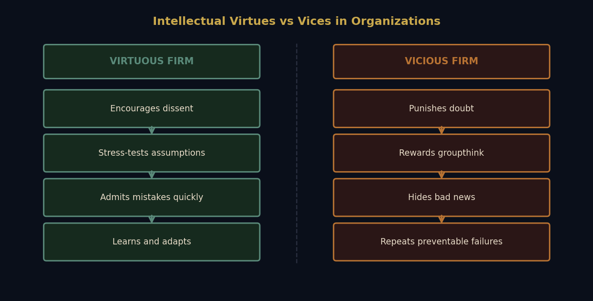
Case Study: Long-Term Capital Management (1998)
- LTCM was run by famous traders and Nobel Prize-winning economists.
- It used extreme leverage (about 25:1) to exploit tiny price differences.
- When Russia defaulted, correlations spiked and the models broke.
- Losses exceeded $4.6 billion in months; the Fed coordinated a private-sector rescue.
Intellectual overconfidence: treating model outputs as reality rather than as conditional tools.
LTCM: The Leverage Structure
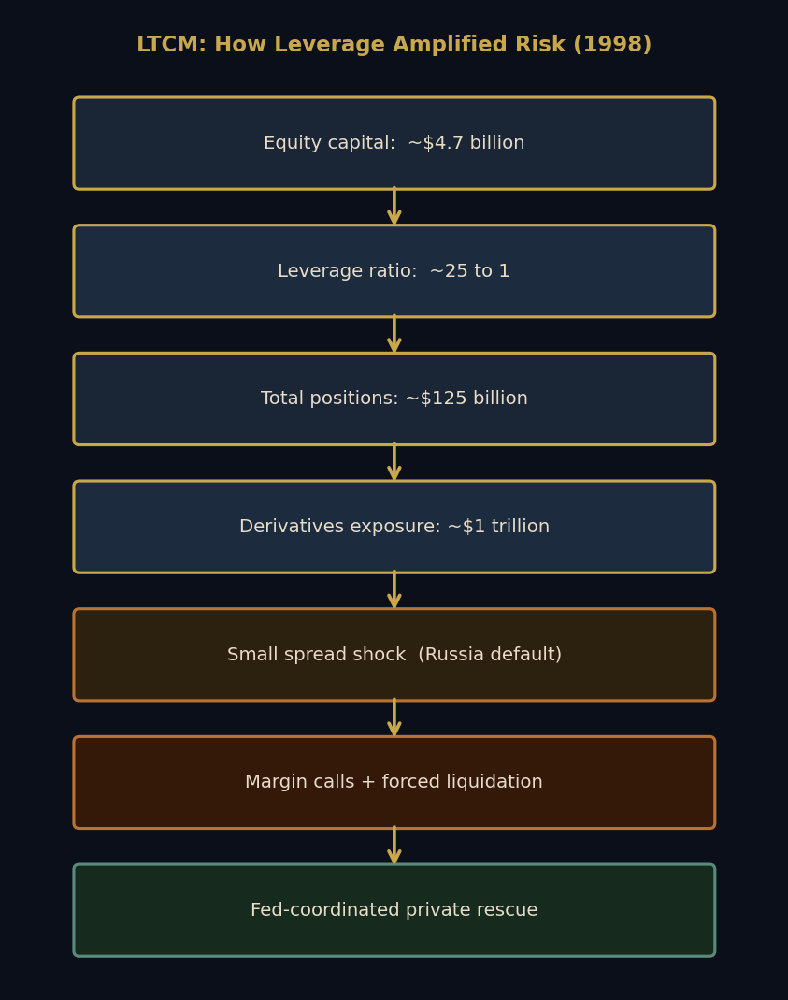
Case Study: Enron
Enron was an energy company that collapsed in 2001 after it was revealed that it had been hiding debt and inflating profits through complex accounting and special-purpose entities. The scandal led to criminal convictions and the dissolution of Arthur Andersen, one of the largest accounting firms.- Enron rewarded aggressive targets and sidelined people who raised concerns.
- Complex accounting made risk and losses less visible to outsiders and insiders.
- The culture made honest internal knowledge harder to produce and share.
- Epistemic vice (arrogance, dogmatism) fed moral vice (deception and fraud).
Cross-Cultural Financial Virtues
| Tradition | Emphasizes | Warns Against |
|---|---|---|
| Confucian | Prudence, social harmony, long-term thinking | Social disruption for short-term gain |
| Western liberal | Individual agency and informed choice | Paternalism, blocked opportunity |
| Indigenous/communal | Reciprocity, resilience, community obligations | Extraction, individual accumulation at communal cost |
| Islamic finance | Risk-sharing, real-economy linkage | Excessive speculation and exploitative lending |
Discussion: Section 4
Think of a financial decision you made that turned out well. Was it skill, luck, or both? How can you tell?
Should financial advisors be held to a standard of intellectual virtue, not just legal compliance?
Can Financial Models Be Trusted?
When does a useful simplification become a dangerous lie?
What Is a Model?
- A model is a simplified picture of reality for prediction and decision-making.
- All models leave things out; the key issue is whether they omit the wrong things.
- A subway map is useful for train navigation, not for choosing a walking route.
- As George Box put it: All models are wrong, but some are useful.
The Rational Actor Model
One of the most influential models in economics is the rational actor model, which assumes that individuals are perfectly rational and always optimize their utility given their preferences and constraints. Prominent advocates include Adam Smith (sort of), John von Neumann, and Milton Friedman. Many modern financial and economic models are built on this foundation.
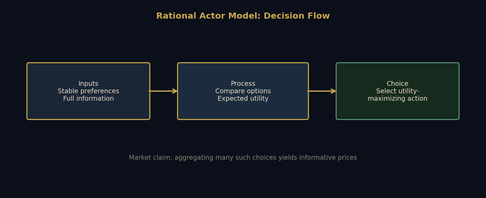
- Markets then aggregate many optimizing choices into prices that encode information.
- This framework powers modern finance: portfolio theory, CAPM, and efficient-markets reasoning.
Criticisms of the Rational Actor Model
Better view: the model is a useful baseline, but dangerous when treated as a complete description of human behavior.
Three Schools of Economic Modeling
| School | Core Assumption | Models Well | Often Misses |
|---|---|---|---|
| Neoclassical | Rational agents, efficient markets, equilibrium | Clean optimization problems | Panic, bubbles, institutional frictions |
| Keynesian | Uncertainty and animal spirits matter | Demand shortfalls, recession dynamics | Fine-grained micro behavior |
| Behavioral | Predictable cognitive bias | Herding, overconfidence, framing effects | Unified grand theory |
Case Study: 2008 and Model Failure
In 2008, the financial crisis revealed that many models used by banks and regulators had failed to predict or prevent the collapse. The models underestimated the risk of mortgage-backed securities and the interconnectedness of financial institutions. This failure was due to a combination of overreliance on flawed assumptions, lack of transparency, and incentives that discouraged questioning the models.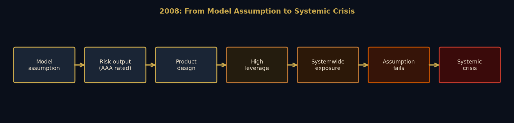
The Philosophy of Science Lesson
- Models are theory-laden: they embed views about how the world works.
- The main risk is not using models, but forgetting they are models.
- When forecasts fail, it is often unclear whether the model, data, or auxiliary assumptions failed.
- Practical rule: treat model output as one input, not final authority.
Discussion: Section 5
Have you ever been told an investment or policy was safe because of a model? What happened?
Should institutions be required to publicly disclose key model assumptions?
Is the Love of Money
the Root of All Evil?
What philosophical and religious traditions say about wealth and greed
Aristotle: Natural vs. Unnatural Wealth
Oikonomia
- Household management for living well
- Natural limit: enough
- Money as a means
Chrematistics
- Money-making as an end in itself
- No built-in limit
- Character risk: endless accumulation
Kant, Buddhism, and Christian Critiques
- Kant: treating people merely as means to profit violates dignity.
- Buddhist economics: sufficiency, non-attachment, right livelihood over accumulation.
- Christian tradition: wealth can become a spiritual danger when it dominates the self.
- Shared concern: unchecked desire for money distorts character and relationships.
Counterarguments: Smith, Bentham, and Growth
- Adam Smith: competitive exchange can convert self-interest into broad gains.
- Utilitarian view: wealth creation can reduce suffering when it lifts living standards.
- Long-run data show large declines in global extreme poverty.
- Tension remains: growth can improve welfare while still generating moral and social harms.
Comparison Across Traditions
| Tradition | Core Claim About Wealth | Strongest Argument | Key Thinker |
|---|---|---|---|
| Aristotelian | Money should serve the good life | Endless accumulation is disordered | Aristotle |
| Kantian | Dignity limits profit-seeking | Persons cannot be mere tools | Kant |
| Buddhist | Sufficiency over maximization | Reduce suffering, curb craving | Schumacher |
| Utilitarian | Wealth can raise total welfare | Growth can reduce poverty | Bentham |
| Marxist | Wealth under capitalism reflects exploitation | Profit depends on unequal power | Marx |
Discussion: Section 6
Where is the line between seeking financial security and seeking wealth for its own sake?
Does reading Smith through moral sentiments change how you interpret modern pro-market arguments?
Is Usury Immoral?
Should It Be Banned?
An ancient debate with modern consequences
The Ancient Case Against Interest
- Aristotle: money is "barren"; interest makes money breed unnaturally.
- Medieval Christianity: usury as sin; religious and legal sanctions.
- Islamic finance: prohibition of riba, with risk-sharing alternatives.
- Shared argument: borrowers in distress are structurally vulnerable to exploitation.
How the Ban Eroded
expand credit
moderate interest
legalize interest
accelerates
The Modern Version: Predatory Lending
| Product | Typical Rate (APR) | Ethical Concern |
|---|---|---|
| Mortgage | ~6% | Usually long-term and collateralized |
| Car loan | ~8% | Can burden low-income borrowers |
| Credit card | ~25% | Debt traps through compounding |
| Payday loan | ~400% | Extreme vulnerability exploitation |
| Loan shark | Very high + coercion | Violence and non-legal enforcement |
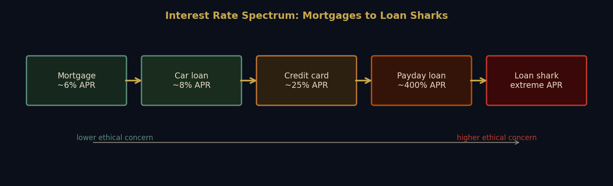
Discussion: Section 7
Is a 400% APR payday loan morally different from a 5% mortgage, or only different in degree?
Should law impose a maximum interest rate? If so, who should set it and how?
When Is a Deal a Fraud?
Fraud, conflicts of interest, and insider trading
Harder Than They Look
Fraud
- Intentional deception for gain.
- Hardest issue: proving intent, not just poor judgment.
Conflict of Interest
- Compensation structures can bias "advice."
- Disclosure may be legal but still ethically thin.
Insider Trading
- Turns on material nonpublic information.
- Boundary between research and unfair advantage is contested.
Each category relies on difficult ideas: informed consent, fiduciary duty, and fair dealing.
Case Study: The 2008 Mortgage Machine
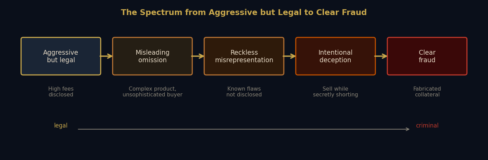
Scenario Exercise: Insider Trading?
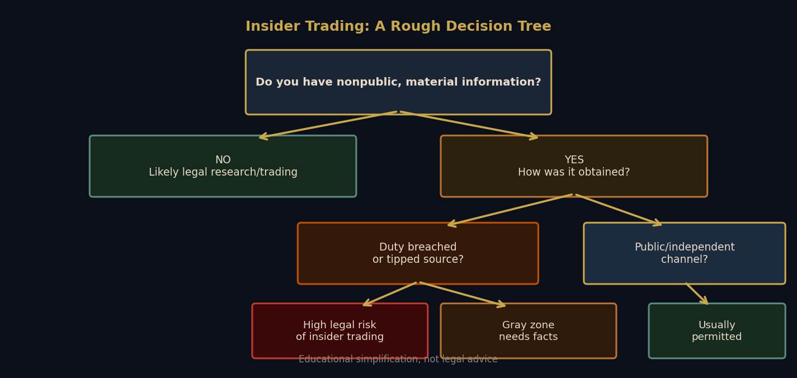
- CEO shares merger news with spouse; spouse buys stock.
- Janitor overhears executives discussing earnings; buys stock.
- Data scientist trades on satellite images of parking lots.
Where is the line between smart research and unfair advantage?
Discussion: Section 8
If buyers cannot realistically understand a product, is selling it ethical even when disclosures exist?
Should advisors be held to fiduciary duty (best interest) or suitability (not wildly inappropriate)?
Is Financialization Good for Society?
When finance grows faster than the economy it should serve
What Is Financialization?
Finance expands from a support function to a governing logic across housing, healthcare, education, and retirement.
The Case For and Against Financialization
Potential Benefits
- Capital allocation toward productive projects.
- Broader participation through investment products.
- Risk-sharing via insurance, mortgages, and retirement funds.
- Innovation in credit and payments infrastructure.
Major Risks
- Inequality from concentrated asset ownership.
- Systemic fragility from tightly coupled balance sheets.
- Short-termism from quarterly performance pressure.
- Democratic tension when market logic overrides public goals.
Then vs. Now by Sector
Risk and volatility move from institutions onto households, while upside concentrates among asset owners.
Discussion: Section 9
Has your relationship to financial institutions improved or worsened over time?
Can we keep capital allocation and risk-sharing benefits while limiting inequality and fragility?
Should Money Be Private?
Cryptocurrency and its critics
How Crypto Works (Roughly)
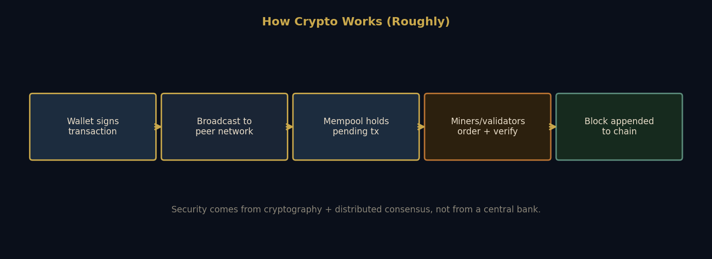
The core innovation is coordinated record-keeping without a single central ledger operator.
The Argument for Private Money
- Crypto began as a political claim: money should not depend on a trusted central authority.
- Bitcoin encodes scarcity (21 million cap), echoing commodity-style money thinking.
- Supporters cite inflation risk, surveillance concerns, and financial exclusion.
The Practical Record
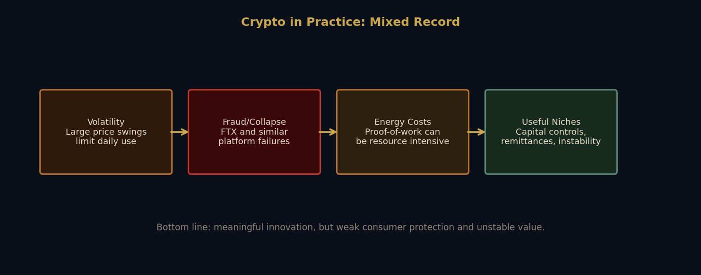
Philosophical Objection
- If money is a public institution, privatizing it can weaken democratic accountability.
- "Trustless" systems still rely on governance choices, infrastructure, and power asymmetries.
- Stablecoins often depend on the public money system they claim to bypass.
| Dimension | Private Money Upside | Private Money Risk |
|---|---|---|
| Freedom | Reduced state gatekeeping | Private platform dependency |
| Stability | Rule-based supply narratives | High price volatility |
| Accountability | Open protocols | Diffuse governance and weak recourse |
| Access | Borderless transfer potential | Scams, key loss, digital divide |
Discussion: Section 10
Whom do you trust more to manage money infrastructure: governments, markets, or a hybrid?
If Bitcoin had existed at scale in 2008, would it likely have reduced or amplified the crisis?
Should Money Be Fully Public?
CBDCs, postal banking, and public options
What Is Public Money?
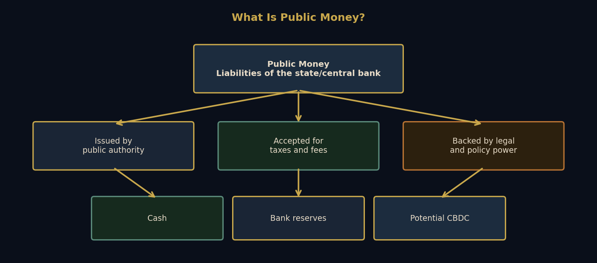
Public money is best understood as a legal-institutional arrangement, not just a payment technology.
Central Bank Digital Currencies (CBDCs)
- Digital money issued by a central bank, potentially held in direct public accounts.
- Unlike crypto: centrally governed, stable unit value, policy-linked.
- Potential gains: inclusion, faster payments, better settlement infrastructure.
- Main risk: high-resolution state surveillance and political control.
Postal Banking and Public Banking
- US postal banking existed from 1911–1967; many countries still run postal savings systems.
- Policy case: offer low-fee basic accounts to unbanked and underbanked households.
- Bank of North Dakota model: public bank partnering with local lenders.
- Core design issue: public utility goals versus political independence.
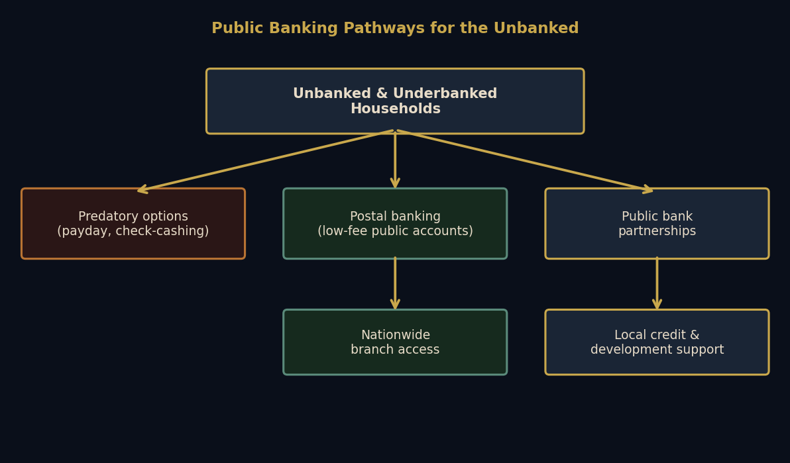
Cash vs. Crypto vs. CBDC
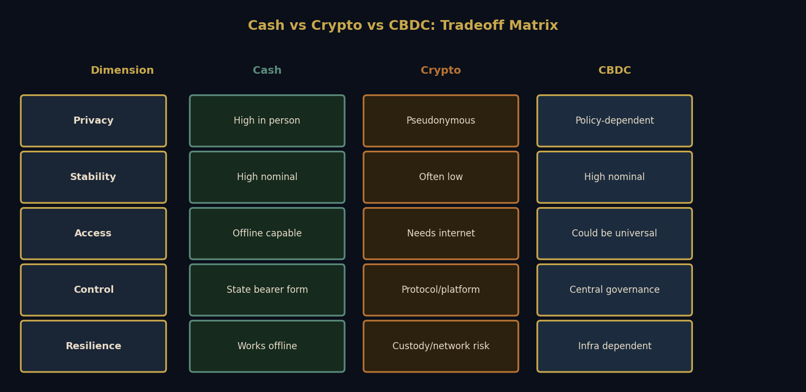
Discussion: Section 11
Would you accept less transaction privacy in exchange for universal, low-cost basic banking access?
Should banking be treated as a public utility like water or electricity?
What Have We Learned?
What remains unresolved, and why that matters
Revisiting the Opening Stories
| Opening Story | Connected Debates |
|---|---|
| 2008 crisis | Models (5), conflicts/fraud (8), financialization (9) |
| Household debt | Nature of money (2), usury (7), epistemic virtue (4) |
| Bitcoin | Commodity vs credit money (2), private money (10) |
| Credit scores | Fairness, institutions, and democratic accountability (8, 9, 11) |
Summary of Core Debates
| Section | Question | Main Positions |
|---|---|---|
| 2 | What is money? | Commodity vs credit/social account |
| 3 | Is there a fair price? | Fundamental value vs market-relative value |
| 4 | What is smart money behavior? | Virtues of inquiry vs cognitive vice |
| 5 | Can models be trusted? | Useful tools vs dangerous overreach |
| 6 | Is love of money corrupting? | Moral critique vs welfare/growth defense |
| 7 | Is interest immoral? | Anti-usury ethics vs credit-for-risk logic |
| 8 | When is a deal unfair? | Legal minimalism vs fiduciary ethics |
| 9 | Is financialization good? | Efficiency gains vs inequality/fragility |
| 10 | Should money be private? | Autonomy/innovation vs instability/accountability gaps |
| 11 | Should money be public? | Inclusion/infrastructure vs surveillance/control |
Key Thinkers Reference
| Thinker | Core Contribution in This Course |
|---|---|
| Aristotle | Money as convention; critique of limitless accumulation and usury |
| Aquinas | Scholastic arguments about just price and usury |
| Adam Smith | Markets, exchange, and moral sentiments |
| Bentham | Utility framework and defense of interest in many cases |
| Marx | Capital accumulation, exploitation, and crisis dynamics |
| Keynes | Uncertainty, animal spirits, and instability in aggregate demand |
| Hayek | Knowledge problems and limits of central planning |
| Rawls | Justice and institutional fairness |
| Sen | Capabilities approach and human flourishing metrics |
| Graeber | Debt-first historical account of money |
Further reading: Stanford Encyclopedia of Philosophy, "Money and Finance."
Final Discussion
Which debate changed your mind the most, and why?
If you could redesign one part of the financial system from scratch, what would you change first?
Open floor: what key question about money still feels unresolved?